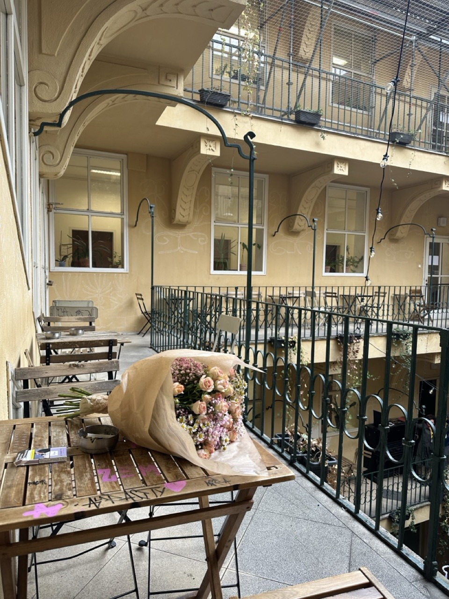
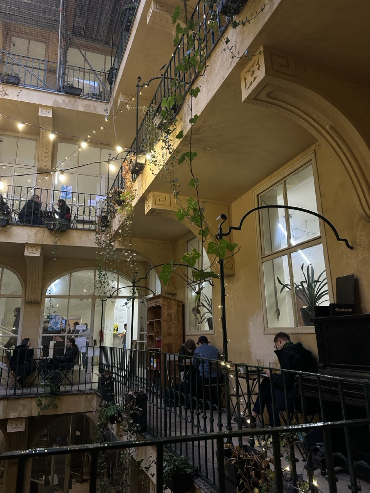
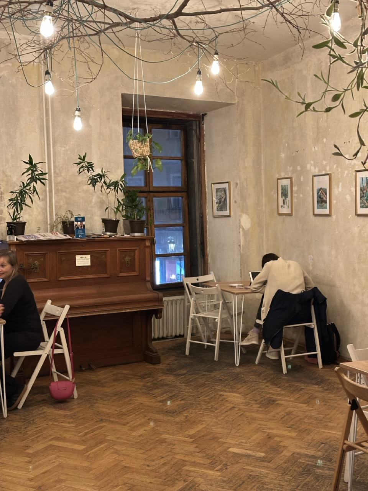

Skautský institut
Skautský institut přímo na Staroměstském náměstí je moje stálice, když potřebuji na chvíli utéct z turistického ruchu centra, ale nechci jezdit daleko. Přestože leží v samém srdci Prahy, panuje tady uvolněná studentská a komunitní atmosféra.
Proč se sem vracím
Nejraději mám zdejší přátelské prostředí a rozumné ceny. Dá se tu v klidu sedět s notebookem nad školními projekty, číst si knížku nebo se jen potkat s kamarády na čaj či kávu. V létě je navíc skvělé posezení na vnitřním dvorku.
Fotogalerie


